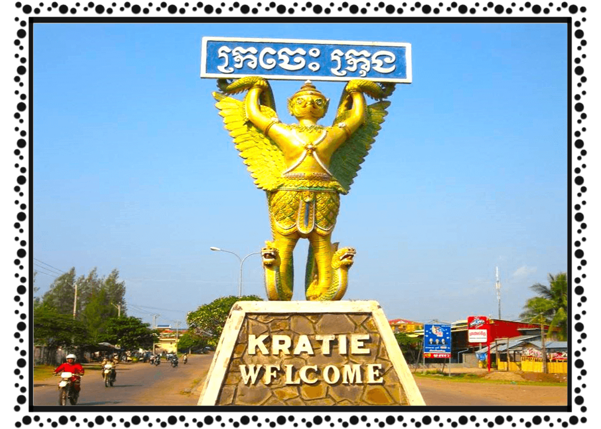

ខេត្ត និងក្រុងនៃព្រះរាជាណាចក្រកម្ពុជា
ក្រចេះ
 ក្រចេះ គឺជាខេត្តមួយក្នុងប្រទេសកម្ពុជា។ ក្រុងរបស់ខេត្តមានឈ្មោះថាក្រចេះដែលជាទីរួមខេត្ត។ ក្រចេះគឺជាខេត្តតូចមួយតែគួរឲ្យចាប់ចិត្តសិ្ថតនៅប៉ែកឦសាននៃរាជធានីភំ្នពេញ។ វាមានព្រំប្រទល់ជាប់នឹងស្ទឹងត្រែងនៅភាគខាងជើង មណ្ឌលគីរីនៅខាងកើត កំពង់ធំ និង កំពង់ចាមនៅខាងលិច ហើយត្បូងឃ្មុំ និងវៀតណាមនៅខាងត្បូង។ មានផ្លូវគមនាគមន៍តភ្ជាប់ ៣ខែ្ស គឺផ្លូវជាតិលេខ៧ ចម្ងាយ ៣៤0 គីឡូម៉ែត្រ ផ្លូវលំក្រាលក្រួសក្រហម កាត់ស្រុកតំបែរ-ស្រុកឆ្លូង មួយខែ្សនិងតាមមាត់ទនេ្លមួយខែ្សទៀត មានចម្ងាយប្រហាក់ប្រហែល នឹងផ្លូវទឹកទនេ្លមេគង្គ ២២០ គីឡូម៉ែត្រ។ ការធ្វើដំណើរ ទោះបីតាមរថយន្តកី្តតាមកាណូតលឿនកី្តមិនលើសពី៥ម៉ោងទេ ពិតជាបានមកដល់ក្រុងក្រចេះដោយសុវតិ្ថភាព។ ខេត្តក្រចេះ សម្បូរដោយធនធានធម្មជាតិ នៅលើដី មានព្រៃព្រឹក្សា វាលស្រែ ដីមានជីជាតិ នៅក្នុងទឹកសម្បូរដោយត្រី ពិសេសមេពូជត្រីធំៗ នៅតាមអន្លង់មេគង្គក្នុងស្រុកសំបូរ និងមានសត្វផ្សោតទឹកសាប ដែលទាក់ទាញភ្ញៀវ ទេសចរជាតិ និងអន្តរជាតិ។ ក្រៅពីនេះ នៅមានទេសភាពដ៏ស្រស់សោភ័ណ ថៃ្ងលិចគងព្រៃកោះទ្រង់ដ៏ស្អាត គួរឱ្យចង់ទស្សនាទៀតផង។ ទាំងអស់ដែលបានបរិយាយចោះៗ ខាងលើ ធ្វើឲ្យខេត្តក្រចេះមានកំណើនភ្ញៀវទេសចរណ៍ទេ្វដងក្នុង មួយឆ្នាំៗ។ កត្តាទាំងនេះបាន ចង្អុលឲ្យខេត្តក្រចេះជ្រើសរើសយក វិស័យទេសចរណ៍ជាវិស័យអាទិភាពក្នុងកិច្ចការស្តារ និងអភិវឌ្ឍសេដ្ឋកិច្ច ទោះតាមរយៈចំណូលដោយផ្ទាល់កី្ត ដោយប្រយោលកី្ត ក៏វិស័យទេសចរណ៍បានកំពុងជំរុញយ៉ាងស្វាហាប់ ដើម្បីធ្វើជាឧបករណ៍វិជ្ជមានមួយក្នុងការកាត់បន្ថយភាពក្រីក្រ បង្កើនការងារសម្រាប់ប្រជាពលរដ្ឋជាង ២៨ម៉ឺននាក់ នៅខេត្តក្រចេះ។ តាមចាស់ព្រឹទ្ធាចារ្យក្នុងតំបន់នេះបានអោយដឹងថា ក្រចេះ គឺជាពាក្សក្លាយពីភាសាបារាំងថា GATILLE ដោយអ្នកបកប្រែ អោយអាជ្ញាធរបារាំងពេលនោះ និយាយពុំត្រឹមត្រូវតាមភាសាបារាំង។ ពាក្យ GATILLE ក្លាយមកជា ក្រចេះ។ ដោយមានការបះបោរពីជនជាតិដើមភាគតិច "ព្នង" ប្រឆាំងនឹងការត្រួតត្រារបស់បារាំង អាណា ព្យាបាលបារាំងពេលនោះបានបញ្ជូនទ័ព និងចាត់លោក GATILLE ឲ្យផ្គត់ផ្គង់សម្ភារៈសឹក ភស្តុភារ និងបោះទីតាំងក្នុងទីក្រុង ក្រចេះសព្វថៃ្ងដោយ តាំងនាមមូលដ្ឋាននោះថា CAMP LOGISTIQUE DE GATILLE មានន័យថា ជំរុំភស្តុភារ Gatille។ ដូចនេះអ្នកខ្លះយល់ថា ក្រចេះ គឺជាពាក្យក្លាយមក ពីឈ្មោះនាយទាហានបារាំងរូបនេះ។ តាមវចនានុក្រមខែ្មរ របស់សមេ្តចសង្ឃរាជ ជួន-ណាត ភាគទី១ និង ភាគទី២ ត្រង់ទំព័រ៩៣០ បោះពុម្ពឆ្នា១៩៦៧ សរសេរថា "ក្រចេ" (ន) (ពាក្យជនជាតិស្ទៀង) ក្របី កំពង់ក្រចេ កំពង់ចម្លងក្របី (ក្លាយមកជា ក្រចេះ)។ តាមការរៀបរាប់របស់ចាស់ទុំរស់នៅក្នុងតំបន់នេះ បានឲ្យដឹងថានៅសម័យដើមខេត្តក្រចេះ មានជនជាតិដើមភាគតិច ជាច្រើនរស់នៅ ហើយមានទំនាក់ទំនងពាណិជ្ជកម្មផេ្សងៗ នៅភូមិភាគឦសាន្តទាំងមូលតាមច្រក "កំពង់ចម្លងក្របី" របស់ ជនជាតិស្ទៀងឆ្លងពីក្រចេះទៅតំបន់ ខាងលើ និងក្រចេះមកតំបន់ខាងក្រោម ហើយតែងតែមកផ្លាស់ប្តូរទំនិញទៅវិញទៅមកនៅ កំពង់ចម្លងនេះ។ ផែ្អកតាមឯកសារយោង របស់លោក ជួប-ឃាន កំណើត និងប្រវតិ្តនាមខេត្តក្រចេះ ចុះថៃ្ងទី ១៨ មេសា ២០០១ បព្ជាក់ថាសម័យកាល ក្រុងសម្ភុបុរៈ (សំបូរ) សេ្តចលាវតែងតែនាំសួយសារ ផេ្សងៗ មកថ្វាយសេ្តចខែ្មរ តាមរយៈកំពង់ចម្លងនេះដែរ។